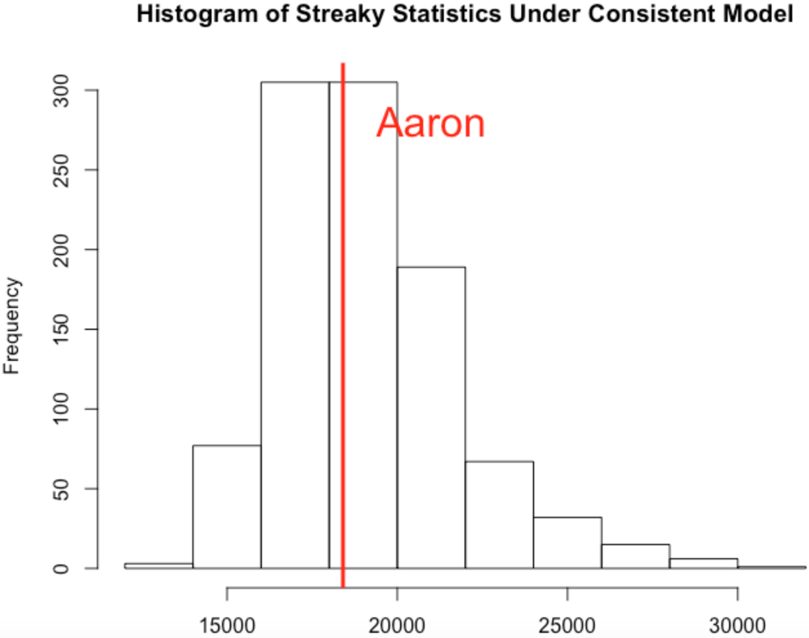
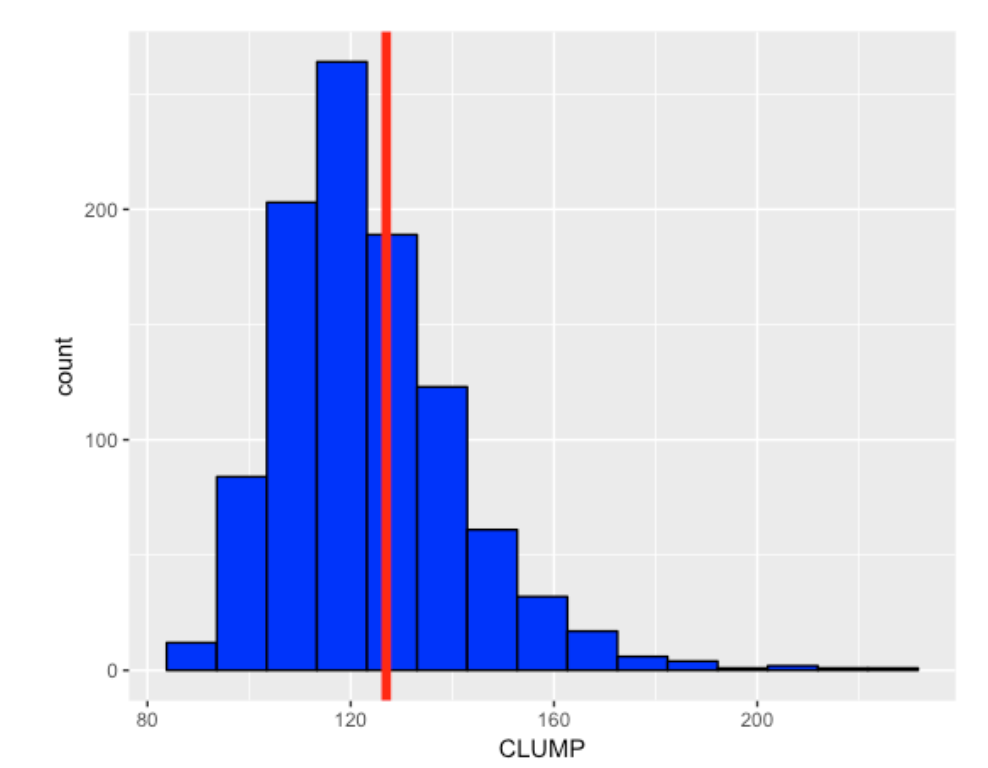
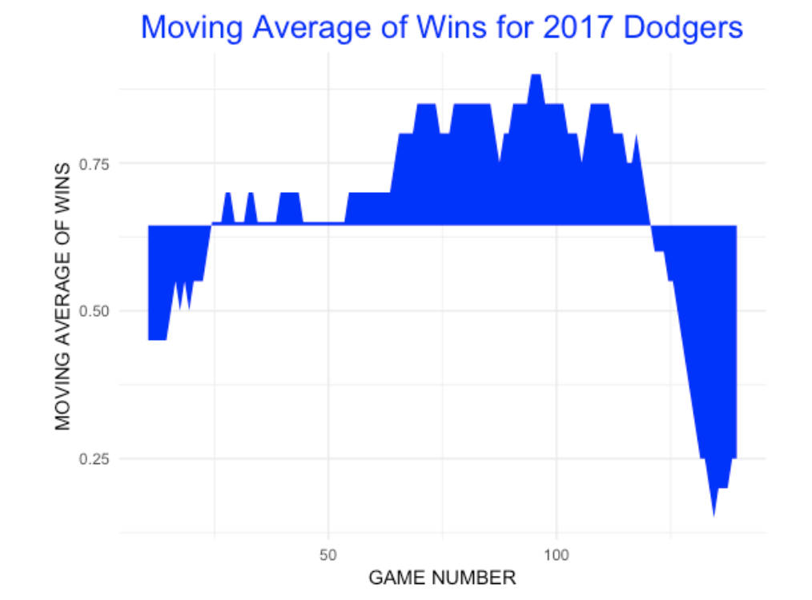

Streakiness Patterns in Baseball
1 Introduction
This is a collection of blog posts from Exploring Baseball Data Using R (https://baseballwithr.wordpress.com/) on the general topic of streakiness behavior of individuals and teams in baseball.
Section 2 focuses on posts on streakiness patterns of individual players such as Mookie Betts and Hank Aaron. We describe ways to measuring streaky behavior and how observed behavior of players differs from what you might anticipate from “random behavior” similar to coin flipping.
Section 3 considers streaky patterns of a team’s sequence of wins and losses during a season. In a historical look at teams’ win/loss sequences we see which teams differ from what one would expect from “random” behavior.
Section 4 describes the search for streakiness of individual players using some of the modern measures of baseball performance in the Statcast era. These measures include a the launch speed on a ball put in play and the expected batting average given the launch angle and launch speed.
Section 5 focuses on “ofers”, the number of failures between successive outcomes. For example, when an announcer is saying that Bryce Harper had a 0-20 hitting slump, this means that we have observed 20 outs between successive hits for Harper. This section provides a historical view of ofers and uses predictive checking to assess the suitability of coin flipping and “hot-hand” probability models.
2 Streakiness of Individual Players
2.1 Exploring Mookie Betts’ Streak
2.1.1 Introduction
There was a noteworthy recent baseball streak event – Mookie Betts went 129 plate appearances without striking out. This motivated me to add some new functionality to my BayesTestStreak package. I’ll illustrate some of the functions here, focusing on no-strikeout streaks for all regular players in the 2016 season.
2.1.2 Installing the Package
You can install the current version of BayesTestStreak from Github:
library(devtools)
install_github("bayesball/BayesTestStreak")2.1.3 Obtaining Some Streak Data
Some variables from the 2016 Retrosheet play-by-play dataset are included in the package as the data frame pbp2016. You can use the streak_data() function to get the streak data (vector of successes and failures) for a specific player. You specify how to define a success (either “H”, “HR”, “OB”, or “SO”) and whether you want to have all plate appearances or just official at-bats. Here I first use the find_id() function to find the Retrosheet player code for Mookie.
library(BayesTestStreak)
find_id("Mookie Betts")
[1] "bettm001"
y <- streak_data("bettm001",
pbp2016, "SO", AB=FALSE)The variable y is just a vector of 0’s and 1’s corresponding to no-strikeouts and strikeouts. To check that I have the right data, I confirm that Mookie had 80 SO (and 650 non-strikeouts) for the 2016 season.
table(y)
y
0 1
650 802.1.4 Some Graphs of This Data
This package provides several ways of graphing this data. The plot_streak_data() function provides a simple line graph where the PA locations of strikeouts are indicated by vertical lines. We see a long white space at the end of the 2016 season corresponding to a run of non-strikeouts.
plot_streak_data(y)To see short-term patterns of strikeout rates, one can use the mavg_plot() function that provides a moving average plot. The inputs are the streak data (vector of 0’s and 1’s) and the window length (here I use 50 PA). The areas represent the streaky patterns of hitting away from Mookie’s overall 2016 strikeout rate. Here we see that Mookie actually had a rash of strikeouts early in the season, but had a strong non-strikeout streak at the end of the 2016 season.
mavg_plot(y, 50)2.1.5 Looking at Streaks
The media is interested in the lengths of the runs of non-strikeouts – I call these spacings. One can compute all of the spacings by use of the find.spacings() function. We see that the gaps between consecutive strikeouts is 0, 4, 3, 0, 5, etc. We see the long gap of 78 at the conclusion of the 2016 season. The I variable indicates with a 0 that the last spacings value of 78 did not end – in fact we know Mookie continued with 129 - 78 = 51 non-strikeouts at the beginning of the 2017 season.
find.spacings(y)
$y
[1] 0 4 3 0 5 0 2 0 5 1 0 12 3 2 4 1 7 2 21 9
[21] 0 11 10 3 8 16 1 14 13 2 1 3 12 18 2 22 5 10 8 0
[41] 10 15 0 2 5 2 6 14 1 3 2 33 7 7 1 14 4 2 27 16
[61] 1 1 6 2 5 16 13 29 5 9 4 1 14 18 3 0 3 1 27 3
[81] 78
$I
[1] 1 1 1 1 1 1 1 1 1 1 1 1 1 1 1 1 1 1 1 1 1 1 1 1 1 1 1 1 1 1
[31] 1 1 1 1 1 1 1 1 1 1 1 1 1 1 1 1 1 1 1 1 1 1 1 1 1 1 1 1 1 1
[61] 1 1 1 1 1 1 1 1 1 1 1 1 1 1 1 1 1 1 1 1 02.1.6 Looking at Longest Streak of Non-Strikeouts for All Players
Suppose I’m interested in looking at the longest run of non-strikeouts for all players in the 2016 season with at least 300 PA’s. Here is what I do in the R script below.
- I find the player codes for the players in the 2016 season with at least 300 PAs. Using the
map()function from thepurrrpackage, I find the streak data for each player – this list of vectors is stored in the variableout. - I write a function
longest_ofer()that computes the longest streak for a given player. Then using themap_dbl()function, I apply this function to all the vectors inout. Similarly, by a second application ofmap_dbl()I find the strikeout rate for all players.
summarize(group_by(pbp2016, BAT_ID),
N = sum(BAT_EVENT_FL)) %>%
filter(N >= 300) %>%
select(BAT_ID) -> S300
out <- map(S300$BAT_ID,
streak_data, pbp2016, "SO", AB=FALSE)
longest_ofer <- function(y){
max(find.spacings(y)$y)
}
L_ofer <- map_dbl(out, longest_ofer)
Rate <- map_dbl(out, mean)- Last I construct a scatterplot of the strikeout rate and longest non-strikeout streak for all players. (I am not showing the code here.) I label the players with longest streaks exceeding 50. We see a strong association between a player’s strikeout rate and his longest “ofer” in his SO/not-SO sequence.
2.1.7 What Have We Learned?
So we see there were six players with non-strikeout streaks exceeding 50 for the 2016 season. What does it mean to have a long non-streakout streak? It can mean several things. Obviously, all of these players are tough to strike out and they have a talent to make contact with the ball. But are these players particularly streaky in their pattern of strikeouts? That is, are their patterns of 0’s and 1’s unusual given their general strikeout ability and number of PA’s? We know Betts had the longest non-strikeout streak, but we don’t know if he was the most streaky among the 2016 players with respect to their strikeout hitting.
Actually there is statistical evidence to suggest that the most remarkable streak among these six players was Adam Eaton, not Mookie Betts. Betts had the longest non-strikeout streak, but Eaton’s pattern of strikeouts was most unusual given his overall strikeout rate and number of PA’s. The statistical evidence is based on a permutation test that can be implemented using the permutation.test in the BayesTestStreak package. I applied a permutation test in an earlier post of assessing situational hitting.
2.2 Hank Aaron - Part 1
2.2.1 Great Afro-American Players
Last Friday was Jackie Robinson Day in MLB and all players wore Jackie’s number (42) to commemorate this day. This day made me reflect on the great Afro-American ballplayers and in particular, Hank Aaron, who had a remarkable career from 1953 through 1971.
I’ve written a number of papers on streakiness. It is one thing to observe and measure particular instances of streaky performance among hitters and pitchers. It is another thing to find particular players who tend to be streaky for a number of seasons in their career. Most of my research tends to result in negative conclusions – much of the streaky patterns that one observes in baseball data appears to be little more than one might see in the patterns of (weighted) coin flipping.
But my recent research has led to a different discovery – particular players like Hank Aaron exhibited remarkable patterns of consistency in a baseball season. Here I describe a simple way of detecting deviations from consistency and investigate how Aaron was consistent in his pattern of home run hitting.
2.2.2 Aaron’s Home Runs in 1960
Let’s look at Aaron’s home run hitting in the 1960 season. It is straightforward to download Retrosheet data for the 1960 season. From this data, one has the outcome of each one of Hank’s 664 plate appearances this season. Here are the numbers of the plate appearances when Aaron had his 40 home runs:
5 13 30 48 70 83 93 95 99 145 148 154 191 232 234 237 253
274 290 297 298 305 323 326 360 362 371 376 423 428 474 481 499 530
575 580 583 627 650 654He hit home runs on his 5th PA, his 13th PA, his 30th PA, and so on. How can we make sense of this pattern of hitting home runs in this season?
2.2.3 A Measure of Streakiness
Suppose you want to measure the degree of streakiness or “clumpiness” in this sequence. One reasonable way of doing it is to first find the spacings or gaps between the home run occurrences and then compute the sum of squares of these spacings. For this data, the spacings are given by
4 7 16 17 21 12 9 1 3 45 2 5 36 40 1 2 15 20 15 6 0 6 17
2 33 1 8 4 46 4 45 6 17 30 44 4 2 43 22 3 10There was a spacing of 4 PA’s before Aaron’s first home run, a spacing of 7 PA’s before Aaron’s next home run, etc. The sum of squares of these spacings (that we call \(S\)) is
\[ S = 4 ^ 2 + 7 ^ 2 + ... + 10 ^ 2 = 18,406 \]
2.2.4 So What?
To make sense of this measure, we need to introduce some model for home run outcomes. Suppose Aaron’s talent for hitting a home run does not change during the 1960 season. That is, his home run ability remains constant throughout the season and the success (or lack of success) of hitting a home run in recent PA’s has no bearing on Aaron’s current chance of hitting a home run. We call this a consistent home run hitting model.
Think of Aaron’s PA’s during the 1960 – in this sequence there were 40 home runs and 664 - 40 = 624 non-home runs. If the consistent model is true, then one would think that any possible arrangement of the 40 1’s (home runs) and the 624 0’s (not home runs) would be equally likely. This observation motivates the following permutation test.
- Randomly arrange the 40 1’s and 624 0’s.
- On this random arrangement, compute the streaky statistic \(S\).
- Repeat steps 1 and 2 one thousand times, obtaining a distribution of \(S\)’s assuming the consistent model is true.
Look how Aaron’s streaky statistic \(S\) compares to this distribution – if his value is in the right tail of the distribution, that indicates that Aaron’s pattern of streakiness is unusually large for a consistent model.
Here’s what happened when I did the simulation. Remember the histogram represents values of the streaky statistic assuming a consistent model and Aaron’s value is indicated by a red vertical line.

The takeaway message is that Aaron’s pattern of streakiness or clumpiness in his home run hitting during the 1960 season is what one would expect if Aaron was a truly consistent hitter (in the sense that we define it above).
2.2.5 What About Hank’s Career?
One way to summarize Aaron’s streakiness is to compute a p-value – this is the probability (assuming a consistent model) that the streaky statistic is at least as large as Aaron’s value. If the p-value is small (say under 5 percent) that indicates that Hank has exhibited more streakiness in his pattern of home run hitting than one would predict based on a consistent model. For the 1960 data, I computed the p-value to be 52% which is consistent with the vertical line being in the center of the graph.
The interesting thing is what I observed when I computed this p-value for each of Aaron’s seasons. Among Aaron’s 23 seasons,
- the p-value was smaller than .25 for 3 seasons
- the p-value was between .25 and .75 for 10 seasons
- the p-value was larger than .75 for 10 seasons
So actually Aaron was “non-consistent” in a different way. His value of the streaky statistic \(S\) was more likely to be in the left-tail of the distribution rather than the right-tail. So there was a common pattern – but this common pattern was that Aaron tended to be less streaky than one would predict based on a consistent model.
One often hears that success leads to success – a hitter becomes more confident with some success and becomes more likely to do well in future at-bats – this is one way of thinking about a streaky behavior. Aaron’s pattern of home run hitting is different – it is like Aaron is more likely to hit a home run after experiencing some failures. (This problem deserves more investigation.)
2.2.6 R Notes
I did some of these calculations using the
BayesTestStreakpackage that I wrote that is available on github. Let me describe several functions.Suppose you have a vector of 1’s and 0’s. The function
find.spacings()will find the lengths of all of the spacings between the 1’s. The functionpermutation.test()will implement the permutation test described above (the input again is a sequence of 1’s and 0’s) and output the p-value.
2.3 Hank Aaron - Part 2
2.3.1 Introduction
One of the greatest baseball players Hank Aaron passed away last week. Many articles have appeared recently that praise Aaron, both as a great baseball player and as a person who excelled despite the the racism he faced. Aaron’s greatness during this racial climate was evident in his pursuit of Babe Ruth’s career home run record. Many of the articles review many of Aaron’s accomplishments from a statistical perspective – for example, this mlb.com article lists 13 stats that show Aaron significance. In my research on streakiness patterns in baseball, I discovered one less-known accomplishment of Aaron – he had an unusually consistent pattern of hitting home runs. I thought it would be a good time to review some of this work, focusing on the use of a simple measure of streakiness. This demonstrates that Aaron had a consistent pattern compared with the great home run hitters of his era.
2.3.2 Consistent Home Run Hitting
It is easiest to start with a definition of consistent home run hitting. A baseball player has a number of opportunities (plate appearances) during a season. Suppose that the chance of hitting a home run during a particular plate appearance is a constant number \(p\) and also assume that outcomes of different PAs are independent. Consider the spacings, the number of PAs between consecutive home runs which we call \(Y_1\), \(Y_2\), etc. For example, if a player hits home runs on PA numbers 10, 15, 40, 50, and 100, the values of the spacings would be \(Y_1\) = 4, \(Y_2\) = 24, \(Y_3\) = 9, and \(Y_4\) = 49.
Under our assumptions, the \(Y\)’s have a geometric distribution with probability of success \(p\). A hitter is defined to be truly consistent if his pattern of spacings (gaps between home runs) resembles a geometric distribution.
There are nice properties of a geometric distribution. The mean is given by \(M = (1 - p) / p\) and the variance is given by \(Var = (1 - p) / p ^ 2\). A simple calculation gives that \(Var / M = 1 / p\) where \(p = 1 / (M + 1)\). Continuing, one can show for a geometric distribution that
\[ \frac{Var}{M (M + 1)} = 1 \]
2.3.3 A Measure of Streakiness
If a player is genuinely streaky, his chance of hitting a home run will not be a constant probability value. During some periods of the season, this streaky hitter will be hot and have a high home run probability and for other periods, he will slump and have a low home run probability. The distribution of his spacings (gaps between home runs) for a streaky hitter will not be geometric. Instead the spacings between home runs for a streaky hitter will show higher variability that one would expect based on a geometric distribution. We saw for a truly consistent hitter in the geometric setting, we have \(Var / (M (M + 1)) = 1\). If the player is streaky, then we anticipate a higher variance among the spacings and so a reasonable measure of streakiness is
\[ Measure = \frac{Var}{M (M + 1)} \]
where we estimate \(Var\) and \(M\) by the sample variance and sample mean of the spacings. If this measure is larger than one, this provides some support for true streakiness.
2.3.4 Hank Aaron’s Streaky Measures
How streaky was Hank Aaron in his home run hitting? Aaron played for 23 seasons. For each season, I found the spacings or gaps between consecutive home runs, computed the mean and variance of the spacings, and computed the streakiness measure. I’ve graphed the values of this measure below – the blue horizontal line corresponds to what we expect for a truly consistent (geometric) hitter. Note that Aaron’s values tend to fall below 1 and the measure exceeds 1 for only four seasons. So Aaron clearly did not have a pattern of streaky hitting. Actually his home run spacings tend to have less variability than one would predict from the consistent geometric model.
2.3.5 Comparing with Other Sluggers of Aaron’s Era
Since I don’t have a lot of experience with this particular measure of streakiness, I don’t have a good understanding how to interpret a particular value like 0.8, and so perhaps my measure is more useful in the comparison of hitters. Compared to other power hitters in Aaron’s era, was Aaron streaky or consistent?
For each of the 23 seasons from 1954 through 1976, I found the twenty hitters with the most home runs. For each player for each season, I found the spacings between consecutive home runs and computed my streaky measure. Below I have graphed the streaky measure values for these sluggers for each season and indicated Aaron’s values as red dots. For each season, look at the relative position of Aaron among the 20 top sluggers. Note that Aaron tends to be one of the smallest values for many of the seasons. The takeaway is that Aaron’s spacings between home runs tended to be less variable than the spacings of other sluggers of his era.
2.3.6 What Have We Learned?
Let’s contrast our findings with the familiar home run accomplishments of Hank Aaron. Aaron’s home run statistics are interesting for a number of reasons.
Aaron hit a career total of 755 home runs over 23 seasons.
Although he was a great home run hitter, Aaron never had more than 45 home runs in a single season.
But there were 11 seasons where Aaron hit at least 35 home runs.
Aaron was not a traditional home run hitter in the sense that he tended to hit line drive home runs with smaller launch angles than the modern sluggers. (I suppose we could check this by watching some videos of Aaron’s home runs.)
Aaron’s home run accomplishment described in this post is more subtle. We are finding that Aaron’s pattern of hitting home runs is more consistent or more evenly spread out than most of the home run hitters of his era. To get a sense of what this means, it is helpful to construct a “streaky plot” that displays the locations (PA numbers) of the home runs by vertical bars. Using these plots, contrast Aaron’s consistent pattern of home run hitting in 1967 (Measure = 0.687)
with the streaky home run hitting pattern of the 1967 Jim Ray Hart (Measure = 1.57):
2.3.7 Who Cares?
One can find hitting streaks in the Stathead section of Baseball Reference, but you won’t see any measures posted that summarize the streaky or consistent pattern of hitting performance. Does that mean that baseball coaches don’t care about these patterns? Well, we all know that teams go through periods of hot and cold hitting and one job of a coach is to manage these patterns of streakiness. I would think teams would value players like Hank Aaron that displayed a consistent pattern of hitting – that would help to offset the cold hitting periods of other hitters.
2.3.8 To Read More
I wrote a Chance paper a few years ago that explored streaky patterns of home run hitting. I used different measures of streakiness, but I reached the same conclusion in Section 5 of that paper that Aaron had a unusually consistent pattern of home run hitting.
3 Streakiness in Team Performance
3.1 General Approach
3.1.1 Introduction
In honor of the Cleveland Indians’ recent 22-game winning streak, it seemed appropriate to do something about streakiness of baseball teams. Although the Indians had a remarkably long streak of wins, I don’t think of them as a particular streaky team. I’ll explain here …
- what I mean by a streaky team and a consistent team
- how one can measure team streakiness
- how one can use a permutation test to see how a team’s streakiness differs from “random” behavior
3.1.2 Streaky and Consistent Teams
Here are the outcomes of the Indians’ first 150 games in the 2017 season:
W W W L L L W L L L W L W W W W W L L W W L W W L L W L W W L W L L L W W L L W W W L W L L L W W W L W L L W L L W L W L L W W W W W W L W W L L L W L W W L W W L L W W W L L L L W L L W W W W W W W W W L L L W W L L W . L L W W W W W W L W W L W L L W W W W W W W W W W W W W W W W W W W W W W L W W
Were the Indians streaky this season? Although they were very successful, I don’t think they were pretty streaky. To me, “streaky” means that a team will go through periods of hot spells AND also periods of cold spells during a season. If a streaky team has won a game, then it is more likely to continue winning in the next game; conversely, if a streaky team has lost, then is more likely to lose again.
The opposite pattern is “consistent” – this means that a team will tend to avoid streaky patterns, both hot and cold. The consistent team will have few long winning streaks and few losing streaks. If the team wins, it seems more likely to lose – similarly, after a loss, this consistent team is more likely to win.
Random coin flipping is neither streaky or consistent. In coin flipping , the chance of heads stays the same throughout the sequence and the chance of heads on one flip does not depend on the outcome of the previous flip. We can assess if a team’s pattern of winning or losing is streaky or consistent by comparing its W/L pattern with the patterns of sequences of coin flipping.
3.1.3 Measuring Streakiness
Basically a measure of streakiness is a measure of the degree of “clumpiness” in a sequence of 0’s (losses) and 1’s (wins). There are different ways of measure clumpiness, but one reasonable measure is the sum of squares of the gaps (number of losses) between consecutive wins. For example, here are the number of losses between consecutive wins for the first 150 games of the Tribe. (We see a lot of zeros in this sequence since the Tribe had many consecutive runs of W’s this season.)
0 0 0 3 3 1 0 0 0 0 2 0 1 0 2 1 0 1 3 0 2 0 0 1 3 0 0 1 2 2 1 2 0 0 0 0 0 1 0 3 1 0 1 0 2 0 0 4 2 0 0 0 0 0 0 0 0 3 0 2 2 0 0 0 0 0 1 0 1 2 0 0 0 0 0 0 0 0 0 0 0 0 0 0 0 0 0 0 0 0 0 1 0Our measure is clumpiness in the W/L sequence is the sum of squares of these gaps which is \(CLUMP = 127\).
3.1.4 A Permutation Test
To assess the streakiness or consistency of a team’s sequence of wins and losses, we use a permutation test. Suppose that the order of the Indians observed wins and losses is indeed random in the sense that any possible arrangement of the Indians 93 wins and 57 losses in the 150 games is equally likely. This statement motives the following simulation experiment:
- Randomly mix up the order of the 93 Wins and 57 Losses.
- Compute the gaps (number of losses) between successive wins and compute the clumpiness statistic CLUMP.
- Repeat steps 1 and 2 many (say, 1000) times – we get the distribution of \(CLUMP\) if wins and losses were distributed randomly throughout the season.
We see how the team’s value of \(CLUMP\) compares with this distribution. If the team’s \(CLUMP\) is in the left-tail of this “random” distribution, this indicates the team is unusually consistent. Conversely, if the team’s \(CLUMP\) value is in the right-tail of this distribution, the team has a streaky performance.
We can measure how extreme the value of \(CLUMP\) by computing a p-value, the chance that a random \(CLUMP\) is at least as large as the team’s value. Large p-values (close to 1) indicate a team is consistent and small p-values (close to 0) indicate a team is streaky.
3.1.5 Example
To illustrate how this works, I randomly mixed up the Tribes 93 wins and 57 loses many times, each time computing the value of the \(CLUMP\) statistic. Here is a histogram of the \(CLUMP\) values over the 1000 simulations. We see that these values range from 80 to 220 with 120 being a typical value.
Were the 2017 Indians streaky or consistent? Remember the value of \(CLUMP\) for the 2017 Indians data was 127 and I indicate this value with a red vertical line.

The p-value, the chance that a random sequence is at least as large as 127 is .395. Since this value is not too small (near 0) or too large (near 1), there is really little evidence that the 2017 Tribe’s pattern of sequence of wins and losses is unusually consistent or streaky. The Tribe has a lot of wins, but the pattern of wins resembles the pattern of a random sequence of 93 wins and 57 losses.
3.1.6 2017 Dodgers
The Dodgers have a similar W/L record as the 2017 Indians, but their pattern of wins and losses is very different. Implementing this same test for the Dodgers first 149 games gives a p-value of 0.001 – they were very streaky. Looking at a moving average graph of the Dodgers’ wins (window of 20 games), shows that the Dodgers had a great winning run until a big losing streak – this pattern is much more clumpier than one would see from a random pattern of Wins and Losses.

3.1.7 For Part 2 of this Study
The goal of this post is to explain the general approach for studying streakiness or consistency of sequences of wins and losses. In Part 2 of this study (probably posted next week), I’ll use Retrosheet data to explore patterns of streakiness and consistency for teams in the last 50 seasons. In particular, here are some questions to explore:
Which teams were unusually streaky or unusually consistent in the past 50 seasons? If a team is consistent one season, will it be more likely to be consistent the following season? (Likewise, does streakiness or consistency persistent across seasons?) Are winning or losing teams more likely to be streaky or consistent?
Also, in part 2, I ’ll describe using the Retrosheet game log data and R functions to implement this study.
3.2 50 Seasons of Team Performance
3.2.1 Introduction
In the last post, I described some methodology for detecting streaky and consistent team performance. One observes a team’s wins (W) and losses (L) – for example the 1968 Mets had a 73-89 record and we observe the sequence of wins and losses during the season. There are three scenarios:
- The sequence of 73 Wins and 89 Losses is random in the sense that the streaky and slump patterns resemble those when the 73 Wins are assigned randomly throughout the 162 games.
- The sequence of wins and losses is streaky if there is more streaky and slump patterns that one would expect under randomness.
- The sequence of W’s and L’s is consistent if there is less streaky and slump patterns than one would anticipate under randomness
We use a streaky measure which is the sum of squares of the gaps (number of losses) between consecutive wins. Then we use a permutation test and the associated p-value to classify the team-season as random, streaky, or consistent. Small p-values correspond to streakiness and large p-values correspond to consistency.
3.2.2 50 Seasons
To explore team streakiness, I looked at all of the W/L sequences for all teams from the 1967 through 2016 seasons. Let me describe the process:
- Using the Retrosheet game logs, I obtained the W/L sequence for a particular team.
- I used functions in my
BayesTestStreakpackage to find the gaps between consecutive wins and implement the permutation test. - For each team and each season, I collected the winning proportion and the p-value which indicates the streaky patterns in the sequence.
3.2.3 Several questions to address:
- What is the overall distribution of streakiness of baseball teams?
- Who were unusually streaky and consistent teams?
- Is there any relationship between a team’s winning fraction and their streakiness? For example, are great teams more or less likely to be consistent?
3.2.4 Overall distribution of streakiness
First I constructed a histogram of the p-values for all team-seasons. (There were 1358 team-seasons in my 50-year study.) To understand this graph, note that if we were just observing W/L patterns observed by flipping coins, then I’d expect these p-values to be uniformly distributed on (0, 1). But it seems that small p-values tend to be more likely, indicating a tendency for a team to be streaky rather than random or consistent.
3.2.5 Unusual teams
One can rank the teams by the value of the p-value. The streakiest 10 teams, using this measure are shown below. It is interesting that great teams (like the 1977 Red Sox) or poor teams (like the 2011 Mariners) both can be very streaky.
| Rank | Season | Team | P_Value | Win_Pct |
|---|---|---|---|---|
| 1 | 1998 | BAL | 0.001 | 0.4876543 |
| 2 | 1987 | MIL | 0.002 | 0.5617284 |
| 3 | 1994 | OAK | 0.003 | 0.4473684 |
| 4 | 2011 | SEA | 0.003 | 0.4135802 |
| 5 | 1977 | BOS | 0.004 | 0.6024845 |
| 6 | 1982 | ATL | 0.005 | 0.5493827 |
| 7 | 2007 | SEA | 0.005 | 0.5432099 |
| 8 | 1981 | DET | 0.006 | 0.5504587 |
| 9 | 2004 | BAL | 0.006 | 0.4814815 |
| 10 | 1995 | HOU | 0.007 | 0.5277778 |
Similarly, here are the 10 most consistent teams, ranked by p-value. Again, note that good and poor teams also can be consistent. It would be interesting to look more carefully at some of these seasons to try to detect reasons for the consistency or streakiness.
| Rank | Season | Team | P_Value | Win_Pct |
|---|---|---|---|---|
| 1 | 1968 | SFN | 1.000 | 0.5426829 |
| 2 | 1968 | NYN | 1.000 | 0.4506173 |
| 3 | 2005 | SLN | 1.000 | 0.6172840 |
| 4 | 1993 | CHN | 0.999 | 0.5185185 |
| 5 | 2014 | LAN | 0.999 | 0.5802469 |
| 6 | 1977 | MIL | 0.998 | 0.4135802 |
| 7 | 1993 | KCA | 0.997 | 0.5185185 |
| 8 | 2003 | CHN | 0.996 | 0.5432099 |
| 9 | 1971 | CAL | 0.995 | 0.4691358 |
| 10 | 1983 | CIN | 0.995 | 0.4567901 |
3.2.6 Winning fraction and streakiness
To understand the relationship between winning records and streakiness, I subdivided the p-values into the bins (0, .1), (.1, .2), …, (.9, 1), and compared the winning fractions of the teams in these 10 bins. Here I display parallel boxplots. A p-value of 0.5 is what one might expect for a random sequence. Generally teams have p-values that are centered about 0.5, but teams with winning fractions between .35 and .40 average a p-value of .40, and the really weak teams (winning fraction under .35) tend to be streaky. This suggests that poor performance tends to be associated with streaky performance.
3.2.7 Closing comments
Of course we get excited by streaky patterns such as the Indians’ 22-game winning streak in 2017. Likewise, there is much said about long streaks of hitting or long streaks of futility (the well-known “ofer” statistics). But I think there is a lot to say about the virtue of consistency – these correspond to teams or players that avoid streaky patterns and exhibit patterns that are different from those of “randomness”. I would think that teams would value consistent players, although we don’t routinely measure this aspect of performance.
3.3 Winning and Losing Streaks
After reading the two recent posts (part I and part II) on streaky and consistent teams, John comments:
“I was reading over this and wouldn’t the CLUMP statistic just be looking at the streaky-ness of the team’s losses? If so then it makes a lot of sense that the Dodgers this year were one of the worst due to their above average record coupled with a very long losing streak. I followed your model’s example, and added on to it. LCLUMP is what you were previously calculating while WCLUMP is looking at the win streaks. I found with 1000 iterations, a team with 93 wins and 57 losses will on average have LCLUMP with mean = 123.8, sd = 17.8 and WCLUMP with mean = 379.9, sd = 57.9 . The 2017 Indians through 150 games have a LCLUMP of 127 and a WCLUMP of 751. This shows that the Indians were in fact abnormally streaky. For a team to have their WCLUMP average close to that number, they would have to be 113-37 through 150 games (WCLUMP about 760). I really enjoyed doing this (all in R), so if you have any thoughts or further input, I look forward to hearing it!”
Let’s review what I talked about earlier and then I can add some thoughts to address John’s comments.
3.3.1 The 2016 Indians – Losing Streaks
Let’s focus on the streaky performance of the 2016 Indians (it is too painful to talk about the 2017 Indians). We observe this sequence of wins (1) and losses (0):
[1] 0 1 1 0 0 1 1 0 1 0 1 0 0 1 1 1 0 0 1 0 0 0 1 1 1
[26] 1 0 1 0 1 0 1 0 0 1 1 1 1 1 0 0 1 0 1 1 0 1 0 0 0
[51] 1 1 1 1 1 1 0 0 1 1 0 1 0 0 0 1 1 1 1 1 1 1 1 1 1
[76] 1 1 1 1 0 0 1 1 0 0 1 0 0 1 0 1 0 1 1 0 0 0 1 0 1
[101] 1 1 0 0 0 1 0 1 0 1 0 1 1 1 1 0 1 0 1 1 0 1 1 0 0
[126] 0 1 0 0 1 1 1 1 1 1 0 0 1 1 1 0 1 0 0 1 0 1 1 0 1
[151] 1 1 1 0 0 1 0 0 1 1 1We collect the lengths of losing streaks, that is the number of 0’s between consecutive 1’s:
[1] 1 0 2 0 1 1 2 0 0 2 3 0 0 0 1 1 1 2 0 0 0 0 2 1 0 1
[27] 3 0 0 0 0 0 2 0 1 3 0 0 0 0 0 0 0 0 0 0 0 0 0 2 0 2
[53] 2 1 1 0 3 1 0 0 3 1 1 1 0 0 0 1 1 0 1 0 3 2 0 0 0 0
[79] 0 2 0 0 1 2 1 0 1 0 0 0 2 2 0 0Our summary measure of clumpiness is the sum of squares of these lengths. We can assess how this compares with “randomness” by means of a permutation test. The p-value (computed by simulation) is equal to 0.937 – this value is large (close to 1), so we conclude that the Tribe is consistent – they tended not to have long losing streaks.
3.3.2 The 2016 Indians – Winning Streaks
But as John mentions, streakiness might be viewed in terms of lengths of winning streaks instead of lengths of losing streaks. Okay, we look at the same win-loss data, but now look at the lengths of the 1’s between consecutive 0’s:
[1] 0 2 0 2 1 1 0 3 0 1 0 0 4 1 1 1 0
[18] 5 0 1 2 1 0 0 6 0 2 1 0 0 14 0 2 0
[35] 1 0 1 1 2 0 0 1 3 0 0 1 1 1 4 1 2
[52] 2 0 0 1 0 6 0 3 1 0 1 2 4 0 1 0 3Although the Tribe did not long losing streaks, they had 14-game and 6-game winning streaks. If we implement the same permutation test, we get a p-value of 0.059. From a winning streak perspective, the 2016 Tribe was streaky.
3.3.3 Relationship Between Winning and Losing Streaks
Okay, one specific team was consistent in having short losing streaks, but streaky in having long winning streaks. That raises the question: Are teams that are streaky with respect to winning also streaky with respect to losing? Likewise, are consistent teams with respect to winning streaks also consistent with respect to losing streaks?
Actually, my initial opinion was “yes” – I thought a streaky team would exhibit long runs of wins and also long runs of losses. Also, a team that avoided long runs of losses also would not show long runs of wins.
To check this, I computed the permutation test p-value using the lengths of losing streaks and the p-value using the length of losing streaks for all 30 teams in the 2016 season. Here’s a scatterplot where I label the point by the team abbreviation.
3.3.4 What do we see in this graph?
Generally there is a positive association in this graph indicating that streaky winning streak teams tend also to be streaky losing streak teams. Likewise, consistent teams with respect to winning streaks tend also to be consistent with respect to losing streaks. This statement agrees with my prior opinion. For example, teams SDN, SLN, MIA, MIL, TOR, and LAN tend to be consistent with respect to losing and winning. Teams ATL, KCA, DET, PIT, ANA, MIN, and TBA tend to be streaky both ways. But there are notable exceptions such as CLE and WAS who look streaky or consistent depending on what you are looking at (either winning streaks or losing streaks).
3.3.5 So What?
Since a team’s streakiness (or consistency) seems to depend on how you look at it (winning streaks or losing streaks), it would seem desirable to produce a measure that is not dependent on how one looks at it.
Here is a simple proposal. Look first at the lengths of all losing streaks – take the sum of squares – call it LCLUMP (following John’s suggestion). Also find the lengths of all winning streaks and let WCLUMP be the sum of squares of these lengths. Then define the clumpiness measure to be the sum CLUMP = LCLUMP + WCLUMP. We can use a permutation test to determine streakiness or consistency using the CLUMP statistic.
Here I illustrate p-values for the 2016 teams using a permutation test and the CLUMP statistic. Basically, the p-values shown are “averages” of the p-values using the losing streaks and the winning streaks. I use color to identify teams that had unusually consistent or streaky seasons.
3.3.6 Final Comments
Several takeaways from this work:
- If one says a team is streaky, this could mean long runs of wins or long runs of losses. The use of a statistic such as CLUMP takes account of both types of long runs and it seems preferable to other measures like LCLUMP or WCLUMP.
- Although we measure clumpiness by looking at the sum of squares of the spacings, there are alternative ways of measuring clumpiness (see the paper by Zhang, Bradlow, and Small).
4 Statcast Streakiness
4.1 Streakiness in Launch Speed
4.1.1 An Invitation to Do a Streaky Analysis
Last week I took a blogging break due to our school’s spring break. I was recently rereading the article “Catching Up with Baseball’s Hilbert Problems” by Dan Turkenkopf from The Baseball Prospectus. Extra Innings: More Baseball Between the Numbers. In the last part of the article, Dan mentions seven questions in the “The Road Ahead” section worthy of further study including this one (number 6) that I’ve quoted:
“6. Do slumps and hot streaks correlate with speed-off-bat? We know that batters often string together stretches of especially good or poor performance. To date, these are largely considered non-predictive and the result of random fluctuations (especially the hot streaks). Is how the batter strikes the ball more indicative of being locked in than the outcome of the at-bat? Or is”locked in” just a way to explain a string of successes, without any predictive value either?”
Since I have Statcast hitting data from the 2017 season readily available, it seemed reasonable to use Dan’s query as a springboard to explore this data for streaks and slumps.
4.1.2 Getting Started
I’m interested in looking for streaky patterns in a batter’s launch speed over the season. I start by breaking the 2017 season into 13 two-week periods – the new variable is called biweek. In passing, I was curious how the average launch speed and average launch angle had changed over the season – see the graphs below. What we see is that the average launch speed started high, decreased through the season and gradually increased towards the end of the season. In contrast, the average launch angle started low but increased during the season. (Any plausible explanation for these patterns?)
4.1.3 Fitting Regressions
I focused on all players in the 2017 season who put at least 400 balls in play. For each player I fit the linear model
launch_speed ~ biweekwhere biweek is a factor input. One output of this regression is a \(R^2\) value which measures the fraction of total variation in a batter’s launch speeds for balls in play explained by the biweek variable. If a player is a streaky hitter, then I’d think that he would show some variation in launch speed over the season and that variation would be picked up by the \(R^2\) variable. (I’m not really interested in testing here, so I’m not looking at the p-value, but that could also be used as our measure.)
Below I display the \(R^2\) values for all the 2017 hitters. Here we are not interested in the actually sizes of the \(R^2\) values, but rather using this measure to set apart the streaky hitters.
4.1.4 Streaky and Consistent Hitters
The streaky players should be the ones where a significant amount of the variation in launch speed values is explained by the biweek number – so the streaky players are the ones with the largest \(R^2\) values. In our graph, four players stand out with \(R^2\) values greater than 0.06. We display boxplots of launch speed by biweek number for these four players. We see some interesting streakiness. For example Corey Seager struggled in launch speed early in the season, did better in a four week period in the middle, and was inconsistent towards the end of the season. Justin Turner’s streakiness is less obvious from the graph, but he struggled in biweek 10. Jake Lamb had strong launch speed values in biweeks 7, 10 and 16, but the values were much smaller for other biweeks.

Our \(R^2\) graph also can be used to identify consistent hitters with respect to launch speed over the season. We look at the six players where the \(R^2\) value is smaller than 0.015 – the boxplots of their launch speeds are displayed following. It is interesting how consistent Mookie Betts was in biweeks 7 through 15 and he did a bit better in the end of the season.

4.1.5 Relationship Between Launch Speed and Batting Average
Generally one believes that higher launch speeds correspond with higher batter averages. Let’s revisit our four streaky hitters and look for an association between their average launch speed and average in-play AVG (each observation is a particular biweek). As expected, we see a positive association, but there are some interesting exceptions from the general pattern (for example, Justin Turner’s biweek when he displayed his smallest average launch speed but highest in-play AVG). Perhaps this variation is due to the small sample sizes for the individual biweeks.
4.1.6 Moving Forward
I think Dan Turkenkopf query about streakiness in speed-off-bat data is interesting and deserves further exploration. Or at least more exploration than I have shown in this post.
Since a batting average is very “luck-driven”, I think streaky patterns in batting average are similar to the patterns one observes from coin tossing, and they are not predictive of future streaky performance. In contrast, I think measurements off the bat are more ability-driven and they may be better measurements for use in streakiness studies.
I’ve only focus on the launch velocities here, but certainly launch angles are also relevant. Maybe there would be a better measurement of performance for a streakiness study that combines launch angle and launch speed.
A R script for reproducing all of this work can be found here. The Statcast data was conveniently downloaded using the baseballr package.
I used the
broompackage for performing all of the regressions and storing the \(R^2\) values in a data frame.
4.2 Streakiness in Swing Outcomes and Expected BA on Balls in Play
4.2.1 Introduction
A couple of years ago, I wrote a post exploring streaky patterns in hitting, focusing on patterns of a batter’s launch speed during a season. This analysis (which I am calling part I of my work) can be improved in several ways. First, in my earlier post I only looked at launch speed and actually the two variables launch speed and launch angle are collectively important in getting a successful outcome on a ball put into play. Second, the batter needs to make contact with the pitch to put a ball in play and perhaps there are interesting patterns of a batter’s sequence of misses and not-misses on swings during a season. So in Part II of this study I am going to look at both patterns of swing outcomes and patterns of outcomes on balls in play in this post. I’ll use several measures of streakiness to identify players that appear to be unusually streaky and unusually consistent during the short 2020 season.
4.2.2 Some General Comments About Streakiness
Before I do any data analysis, I should make some general comments about streakiness based on my work on this subject over many years. First, the baseball media loves to talk about streaky performances of players and teams and obviously these discussions can impact player performance and how managers use players during a game. But I don’t think that much of these announced streaky performances are that meaningful. If one had a box of coins with varying chances of success and you flipped them repeatedly, you would see similar interesting streaky patterns of heads and of tails. Of course, coins don’t have streaky ability, and so we would dismiss these streaky patterns as just occurring by chance. But we view streaky patterns of athletes differently. The baseball media talks about streaky hitters as if these players really possess streaky ability and their observed streaky performances are predictive of streaky performances in the future.
There are several statistical issues related to streakiness that motivate my work. First, one challenge is to devise reasonable measures of streakiness given a sequence of batting outcomes for a specific player. We’ll propose several streaky measures in this post. Second, if we compute a measure of streakiness, is this value unusually small or large? One way to understand the value of a streaky measure is to compare this value with values of the streaky measures for other players. Another approach is to compare this streaky measure value with simulated values assuming some random probability model. We’ll illustrate this simulation method when we look for interesting streaky patterns in binary (0/1) data.
4.2.3 Streaky Patterns of Misses on Swings
Let’s first consider streaky patterns on swings. For example, here are the results of the first 50 swings of Bryce Harper for the 2020 season where 1 denotes a miss and 0 denotes some contact. In this short sequence, we see some interesting patterns – for example, Harper had a streak of 12 connective swings (sequences of 0’s) where he made some contact.
[1] 0 0 1 1 1 1 0 0 1 0 0 1 0 0 1 0 0 0 0 0 0 0 0 0 0
[26] 0 0 1 1 0 1 0 1 0 0 1 0 0 0 0 1 0 0 0 1 0 1 0 0 0One way of measuring streakiness is to look at the lengths of the spacings between consecutive misses (for example, in this example the lengths of the spacings are 2, 2, 2, 2, 12 in the first five gaps), and define the streaky measure to be the sum of squares of these lengths (2^2 + 2 ^ 2 + 2^ 2 …). Large values of this measure would indicate streakiness.
To see if this streaky measure is unusually small or large, we apply a permutation test. We randomly arrange the sequence 0’s and 1’s and compute our streaky statistic. By repeating this simulation many times, we get a distribution of the streaky statistic if the 0’s and 1’s are arranged in some random fashion. We compute a p-value, the probability the streaky statistic from the random data is at least as large as our streaky measure. If the p-value is close to 0, then our data appears more streaky than the patterns in random data; if the p-value is close to 1, then our data is more consistent (opposite of streaky) than random data.
4.2.4 Streaky Behavior on Balls in Play
Next we want to look for streakiness in the quality of the ball put into play. Given the launch angle and exit velocity, we can estimate the probability \(p\) that the BIP will be a hit. This estimated \(p\) is actually the variable estimated_ba_using_speedangle in the Statcast dataset. We look for streaky patterns in the sequence of estimated \(p\)’s for a given player. There are many ways of measuring streakiness for a sequence of continuous measurements. Suppose we divide the measurements by week and fit the linear model
p ~ weekWe’ll use \(R^2\) for this fit as our measure of streakiness – this is the proportion of variability of the estimated p’s that is explained by the week variable. If this \(R^2\) measure is large, this would indicate streaky hitting on balls put into play.
4.2.5 Bryce Harper
Let’s illustrate the use of these two streaky measures for Bryce Harper for the 2020 season. The top graph displays the sequence of misses (as black bars) on swings for the 447 swings of Harper’s 2020 batting. We display the p-value which is 0.82. Here Harper’s swings don’t look streaky – since the p-value is close to 1, his pattern of swing outcomes actually looks less streaky than flips of a coin.
The bottom graph displays Harper’s probabilities of hit as boxplots over the weeks of the 2020 season. The R squared value is 0.087 which indicates that only about 9% of the variation in the hit probabilities is explained by week. I don’t see much pattern here, but Harper seemed to hit well in the final two weeks of the 2020 season.
4.2.6 Streaky Patterns for All 2020 Hitters
I looked at all batters in the 2020 season who had at least 600 swings. For each player, I looked at streakiness patterns in their swings (miss or connect) and in their probabilities of hit for their balls in play. I’ve constructed a scatterplot of the swing p-values and the R squared values. We don’t see much pattern in the graph which indicates that streakiness in swings doesn’t seem associated with streakiness in the quality of the balls put into play.

If you look at a graph (say a histogram) of the swing p-values, these tend to be concentrated in small values. This indicates that players tend to be streaky in their pattern of misses on swings.
4.2.7 Some Streaky Hitters
In the scatterplot, several hitters seem to stand out by having high \(R^2\) values – let’s identify these hitters:
Let’s look at Luis Robert who appears to be streaky both in his pattern of swing results and in the quality of the balls put into play. Looking at the top graph, we see several interesting regions of white space where Robert was making contact on each swing. Looking at the bottom graph (the graph of hitting probabilities), we see Robert was hot in weeks 30, 33, 34, 39 and cold in weeks 31, 32, 36, 37, 38. If one looks at similar graphs for Daniel Vogelbach and Gleyber Torres, you’ll see big differences in the probabilities of hit across weeks which accounts for the large R squared values.

4.2.8 Some Takeaways
A deeper look at streakiness. This work is still preliminary, but I think there is some promise to this particular approach to looking for streaky hitting. Streakiness is an example of a situational effect that is relatively difficult to pick up statistically. I think Statcast measurements are more ability-driven then results of balls put into play and so I think there is a better chance of identifying streakiness through these launch condition measurements.
Covariates? One problem with my streaky measurement approach is that I’m ignoring relevant covariates. For example, a batter may be going through a streak of swing misses not because he is cold, but he is facing a strong pitcher. It would be preferable to use some measure of success that adjusts for relevant covariates.
Predictive? Really the objective is to identify hitters who are truly streaky in the sense that past streaky performance is predictive of future streaky performance. It was hard to find truly streaky hitters using Hit/Out data, but I think there is more promise with launch condition data.
R Code? All of the R code for this work is available as a Markdown file on my Github Gist site.
4.3 Using a Shiny App
4.3.1 Introduction
Back in a post from March 2018, I stated a question from Dan Turkenkopf (from his article “Catching Up with Baseball’s Hilbert Problems”) asking if slumps and streaks were correlated with speed-off-bat. In this post, I looked at patterns of batter’s launch speed over a season and identified hitters who were usually streaky or unusually consistent in their launch speed during the 2017 season. In a second post from October 2020, I explored streaky patterns in both whiffs and estimated hit probabilities. In my closing remarks of that post, I commented that Statcast measurements are likely more ability-driven then results of balls put into play and so I think there is a better chance of identifying streakiness through these launch condition measurements.
In the “Streakiness” chapter from our book Curve Ball (coauthored by Jay Bennett), we used moving average plots to detect streakiness in hit/out data and we distinguished observed streakiness from true streakiness where the streakiness is more than one would predict based on some “consistent” probability model. Here I will illustrate this Curve Ball approach by means of a Shiny app. I’ll describe the method, show some snapshots from the app, and provide some examples of hitters who were unusually streaky or unusually consistent in the 2021 season.
4.3.2 Illustrating The Method Using the 2021 Bryce Harper
We begin with all 356 balls that Bryce Harper (the 2021 National League MVP) put into play in the 2021 season. To measure the quality of the ball in play, we use the Statcast estimated_ba_using_speedangle variable which is the estimated hit probability based on the launch speed and launch angle measurements. We are looking for streaky patterns in this sequence of measurements sorted in time.
A basic graph to illustrate streaky hitting patterns is to plot moving averages of these estimated BA measurements against the in-play number using some window width. Here’s a graph of the moving averages using a width of 20:
I have shaded the regions above and below the overall in-play BA average of 0.409. Streakiness is indicated by large blue regions in this plot. One possible way to measure observed streakiness is to compute the total area of the blue region that I call BLUE – in this display BLUE = 19.07.
4.3.3 Is the Streakiness Meaningful?
It is difficult to make sense of this observed streakiness in the in-play data without some reference. Maybe Harper is truly consistent in his batting approach and what we are observing is just some random or chance variation. (After all, flipping results from a fair coin can look pretty streaky.)
Suppose that Harper is truly consistent in the sense that all possible permutations of his 356 balls in play are equally likely to happen. We will call this the “equal probability model”. If one assumes this model is true, one can learn about plausible patterns of streakiness by a simulation experiment. Suppose we …
Randomly permute the 356 values of Harper’s estimated BA values.
From a moving average plot of this permuted data (with a window of 20), compute the area of the blue region.
We repeat steps 1 and 2 a total of 500 iterations and collect the values of BLUE. Below is a histogram of the simulated BLUE values assuming the equal probability model:
Under this model, we see that BLUE values between 15 and 25 are possible and Harper’s value of 19.07 is in the middle of this simulated distribution. We can measure the extremeness of Harper’s value by the Tail Probability, the probability the simulated BLUE is at least as large as Harper’s value. Here the tail probability is 0.438 which indicates that Harper’s streakiness is what one might predict from this equal probability model. In other words, there is little evidence that Harper is truly streaky. If we find for another hitter that the tail probability is small, say under 0.10, then we would have evidence that this hitter shows some true streakiness.
4.3.4 Some Extreme 2021 Hitters
I repeated this exercise for all batters who had at least 300 balls in play during the 2021 season. For these batters, I focused on the tail probabilities – batters with small tail probabilities are more streaky than one would predict from the chance model and batters with large tail probabilities (close to 1) are more consistent than one would predict from my model.
Here are moving average plots for two hitters that stood out (here I am using a width of 30). Jeimer Candelario had an unusually consistent pattern of hitting (small blue area) and Yoan Moncada’s pattern of hitting was unusually streaky (large blue area).
4.3.5 The Shiny App
It is straightforward to write the code for a Shiny app that does this work for any 2021 hitter of interest. Here’s a snapshot of the app. One inputs the batter name, the selected measure (either one can use the estimated BA or estimated wOBA based on the launch variable measurements), and the width value for the moving averages. The Observed tab shows the moving average graph and the value of BLUE. The Simulated tab displays a histogram of 500 simulated values of BLUE from the equal probability model and the value of the tail probability. One can use the Download Data button to download a csv file of all of the moving average data.
5 Ofer Study
5.1 Historical Look at Ofers
5.1.1 Introduction
Rhys Hoskins of the Phillies recently went through an 0 for 33 slump – that is, he had a streak of 33 consecutive outs in his official at-bats. On the surface, that sounds like Hoskins had a severe batting slump, but it is hard to view this “accomplishment” without understanding the context. Is it really unusual to have an “ofer” of length 33? In this post, I’ll explore the history of ofers over the twenty full seasons from 2000 through 2019. Here are some questions that we’ll try to answer.
How do you obtain this streak data from the Retrosheet play-by-play files?
What are some general patterns of ofers in this twenty-year period? In particular, are long ofers more common in recent seasons of baseball?
How does the pattern of ofers relate to the pattern of batting averages in this period?
What are some interesting large ofers among non-pitchers in this period?
Are there players that tend to have long ofers, that is, exhibit streaky batting patterns?
5.1.2 Collecting Ofers from Retrosheet Data
Here’s a general description of the process obtaining the lengths of all ofers for a player in a particular season.
Suppose, for example, that I want to extract the ofers for Mike Trout during the 2019 season. I have a Retrosheet data file containing the outcomes of all plays during the 2019 season.
Noting that Trout’s retro ID is “troum001”, I select the rows of the data file where the BAT_ID variable is equal to “troum001” and we only consider outcomes of official at-bats (AB_FL = TRUE).
We want to make sure the records are sorted correctly, so we arrange the records in ascending order by Date, Game Number (this is relevant if Trout is playing in a double-header), and Inning. (It is possible that the batter has several at-bats during the same inning, but I didn’t see an obvious Retrosheet variable that would indicate the at-bat number within a particular inning.)
We create a binary variable Hit equal to 1 if we observe a hit (EVENT_CD between 20 and 23) and 0 otherwise.
There is a simple function
rle()from the base R package that will find the lengths of all ofers and lengths of all streaks of consecutive hits. You just input the vector of 0’s and 1’s andrle()outputs a list – lengths gives the lengths of all streaks and values indicates if we have a 1 streak (values = 1) or a 0 streak (values = 0). I converted therle()output to a data frame to facilitate future work.
I wrote a R function retro_streakwork() that finds the streaks of all players for a particular season. (I indicate below where to find this function code on Github.) Then I ran this function using the 2000 through 2019 Retrosheet files and then row-combined the results. The resulting data frame gives the lengths of all ofers and all 1-fers (streaks of consecutive hits) for all players in each of the twenty seasons.
5.1.3 General Patterns in a 20-Year Period
Most of the readers know that batting averages have been decreasing over recent seasons, so I would think there would be a similar trend of ofers.
For each season (2000 through 2019) I found
the overall batting average
the mean length of a ofer
the count of ofers that were of length 25 or longer
The figure below displays these three measures as a function of the season. Note that the overall BA starts to drop in the 2010 season and it has been in the neighborhood of .255 from seasons 2011 through 2019. Note that as the BA dropped in 2010, the Mean Ofer Length and the Number of Long Ofers increased. This is reasonable since there is a clear association between batting average and ofer lengths. Since we are seeing a historically low BA in the current 2021 season, we also anticipate some historic ofer behavior this season.
5.1.4 Extreme Ofers
We are always interested in extreme batting statistics, especially the players who exhibit large ofer values. Here is a table of the ten highest ofer lengths among non-pitchers in the 2000 through 2019 seasons. Looking at Craig Counsell’s Baseball Reference page, I note that he had a relatively poor .178 AVG in his final 2011 season. (I found an interesting article on ESPN explaining the impact of this slump on Counsell’s baseball career.). Also we see from Baseball Reference that Justin Ruggiano had a weak .222 AVG during the 2013 season when he had an ofer of length 42. So low batting averages might be the explanation of the high ofers in these particular cases.
1 Craig Counsell 2011 45 2B
2 Justin Ruggiano 2013 42 OF
3 Luke Scott 2012 41 OF
4 Andy Fox 2004 40 SS
5 Brad Ausmus 2006 40 C
6 Cheslor Cuthbert 2019 40 3B
7 Pablo Sandoval 2017 39 3B
8 Chris Widger 2000 37 C
9 Jose Cruz 2004 37 OF
10 Eugenio Velez 2011 37 2B Do some players tend to have a large number of long ofers? I arbitrarily decide that a long ofer is a streak of 20 consecutive outs or longer. For each player, I counted the number of “long” ofers over the 2000 through 2019 seasons. Here are the top 10 non-pitchers who lead with respect to long ofers. Looking over this list, I notice that several of these players (Mark Reynolds, Chris Davis, Adam Dunn) are known for their tendency to strike out. It might be interesting to explore the connection between strikeouts and ofers.
1 Joc Pederson 9 OF
2 Jose Bautista 8 OF
3 Mark Reynolds 8 3B
4 Justin Smoak 8 1B
5 Chris Davis 7 1B
6 Adam Dunn 7 OF
7 Chris Iannetta 7 C
8 Cesar Izturis 7 SS
9 Andruw Jones 7 OF
10 Adam LaRoche 7 1B 5.1.5 Streaky Performance or Streaky Ability?
What does it mean for Rhys Hoskins to have a 0 for 33 hitting performance? Was Hoskins just unlucky due to the particular circumstances (pitchers, fielding plays, umpire ball and strike calls) at the time? Or is Hoskins just a streaky hitter who normally goes through cold and hot periods of hitting?
Let’s distinguish streaky performance and streaky ability. We observe many streaky performances in baseball. For example, Kyle Schwarber hit 12 home runs in 10 consecutive games – that is clearly a notable streaky performance. In contrast, streaky ability refers to the general tendency of a hitter. A hitter with streaky ability will have a consistent pattern of extreme hot and cold performances across many seasons. I believe that baseball managers and baseball fans believe in streaky ability, so particular players are given “streaky” labels. For example, if I google “streaky hitter”, I see an article about Chris Davis – he is believed to be a player with streaky hitting ability.
5.1.6 Detecting Slumps and Predictive Checking
Suppose a hitter goes through a “0 for 12” streak. Does this streaky performance indicate that this player is in a slump? It is hard to say since these type of slumps may be common in coin tossing. That is, if you have a coin where the probability of heads is 0.255, then you may find that a “0 for 12” streak can happen during a full baseball season. So this “0 for 12” is not an indication of streaky ability, but rather is just a consequence of the chance behavior of a truly consistent hitter analogous to coin flipping.
In a follow-up post, I’ll illustrate a useful Bayesian method of interpreting streaky performances. One starts with a plausible probability model for baseball hitting. One checks this model by simulating future datasets and computing measures of streaky performance such as the length of the longest ofer. By repeating this simulation process many times, one obtains the predictive distribution of the streaky measure, and one sees how the observed streaky measure compares to this predictive distribution. If the observed measure is in the extremes of this distribution, then this exercise casts doubt on the probability model and suggests how the model can be adjusted. This procedure makes a clear distinction between a player’s streaky ability that one represents by the probability model and the player’s streaky performance.
5.1.7 Got R Code?
On my Github Gist site, you can view and download the function retro_streakdata() that collects the streak data (lengths of ofers and 1fers) from Retrosheet data for a particular season.
5.2 Predictive Checking of a Coin Flipping Model
5.2.1 Introduction
In last week’s post, I explored the historical patterns of so-called ofers (runs of outs between consecutive hits). We saw that ofers are more common in modern baseball due to the decrease in the overall batting average. Also we found some interesting long ofers in the last twenty seasons. In this post we try to make sense of a player’s “long” ofer value. Specifically, what does this ofer value say about the player’s ability? We use this example to illustrate Bayesian predictive checking.
5.2.2 A Simple Model for Hitting
Here is a simple probability model that I call “the coin flipping model” for describing baseball hitting. Suppose a player has a sequence of N at-bats during a season. On each AB, he gets a hit or an out and the chance of a hit is equal to a constant value p. Moreover, the outcomes of different AB are independent which means that outcomes on previous AB have no influence over the outcome of the current AB.
A fan might think this coin flipping model is crazy. The chance of a hit is certainly not constant. For example, the hit probability might depend on the quality of the pitcher, or might depend if the batter is “hot” or “cold”. But this model is useful as it establishes a baseline or reference model which will make it easier to understand patterns of streaky hitting behavior.
Continuing this model description, we complete this model by assigning a probability distribution to the constant hitting probability p. Here we use a beta curve as our “prior” – it reflects one’s opinion about the location of p.
5.2.3 The 2021 Rhys Hoskins
Let’s focus on Rhys Hoskins who had an interesting 0 for 33 slump during the first half of the current 2021 season. Let’s describe this coin tossing model for the 2021 Hoskins. We assume that Hoskins has a constant probability p of a hit on a single AB. To get a suitable prior, I look at Hoskins batting averages for his MLB seasons and construct an interval that I am pretty confident contains p. After some thought, I believe p is in the interval (0.220, 0.290) with probability 0.90. This information can be matched with a beta prior with shape parameters 106.5 and 312.4.
5.2.4 Simulating Data from the Predictive Distribution
Here’s the main question – is Hoskins 0 for 33 slump consistent with the coin flipping model that assumes a single hitting probability?
To answer this question, we simulate a replicated future dataset from the predictive distribution. I am writing this post at the All-Star break and Hoskins has had 328 AB in the games before this break, so we simulate hit/out data for 328 at-bats. We perform this simulation in two steps.
We simulate a single value \(p\) from the beta(106.5, 312.4) prior
We simulate independent hitting outcomes \(y_1, ..., y_{328}\) from a Bernoulli(p) distribution. This is analogous to 328 flips of a coin where the chance of a heads is \(p\).
5.2.5 Computing a Checking Statistic
Next, we compute some statistic on our predictive data to check our model. Since we are interested in the maximum ofer, we compute all of the ofers from the simulated hitting outcomes and find the length of the longest ofer. This statistic “maximum ofer” is our checking statistic.
5.2.6 Repeat this Process – Obtain a Predictive Distribution of the Checking Statistic
We repeat this process (simulating a value of p, simulating hit/out outcomes, computing a checking statistic) many times. We collect the values of the checking statistic (here, the maximum ofer). This collection is a simulated sample from the predictive distribution of the checking function.
5.2.7 Look at the Observed Value of the Checking Statistic
Now we look back at the maximum ofer for Hoskins in the first half of of the 2021 season – we observe a ofer of 33 at-bats.
To see if this is extreme, we compare this value with the predictive distribution of the maximum ofer assuming our coin flipping model. If this observed ofer value is in the extreme tails of this distribution, this casts doubt on the assumed probability model. What this means is that our coin flipping model did not predict an ofer value of 33. This suggests that Hoskins hitting data is not well described by this model.
5.2.8 My Maximum Ofer Shiny App
I wrote a Shiny app to illustrate this process. You can find this app live at
https://bayesball.shinyapps.io/PredictiveMaxOfer/
There are four inputs. One inputs a 90% interval estimate for the hitting probability p, the number of future AB, the choice of checking function (here we are using the maximum ofer length), and the value of the observed streaky measure (here 33). The app displays a histogram of the predictive distribution of the maximum ofer and overlays the observed value with a red vertical line. To see if this observed value is extreme, the app computes the tail probability, the probability the predicted ofer is at least as large as the observed value. Here the tail probability is 0.008 which confirms that ofer value of 33 is indeed extreme relative to predictions from my coin flipping model.

5.2.9 Another Example
Here’s another (hypothetical) illustration of predictive checking. A good hitter with true hitting probability close to .300 is going through an 0 for 15 slump in 300 at-bats. Should the manager be worried? Suppose the manager believes with 90% probability that this player’s hitting probability is between 0.27 and 0.32. The snapshot below show an application of the Shiny app – it displays a histogram of the predictive distribution of the maximum ofer assuming this manager’s prior and 300 at-bats.
The observed ofer value of 15 is displayed as a vertical line. Here it is pretty common to see a maximum ofer between 10 and 20. The takeaway is that this player’s “high” ofer value is consistent with a coin flipping model with a single hitting probability p. Even a coin-flipping model can produce large ofer lengths.
5.2.10 Other Checking Statistics
The maximum ofer is just one way to measure streakiness of a sequence of hits and outs. One nice feature of this approach is that you can simulate the predictive distribution of any statistic that one is interested in. For example, another way to measure streakiness is to compute the sum of squared ofers. For example, if we observe the following sequence of hits (H) and outs (0),
HOOOHHOHOOOOHOHOOOHthe ofers (length of outs between successive hits) are
3, 1, 4, 1, 3and the sum of squared ofers is
\[ 3 ^ 2 + 1 ^ 2 + 4 ^ 2 + 1 ^ 2 + 3 ^ 2 = 9 + 1 + 16 + 1 + 9 = 36. \]
My Shiny app can show the predictive distribution of the sum of squared ofers and you can overlay the observed sum of squared ofers value for a given hitter.
5.2.11 Wrap-Up
The general objective here is to gain some insight or understanding about Rhys Hoskins 0 for 33 hitting slump. We assumed a coin flipping model where Hoskins’ hit probability is a single value \(p\), and by using predictive checking, we showed that this 0 for 33 is inconsistent with this model.
The next step is to think of an alternative probability model that might reflect one’s belief about streakiness. Maybe Hoskins has two possible hitting probabilities – when he is “cold” the probability of a hit is one value, say \(p_C\) and when he is “hot” his hit probability is \(p_H\). We’ll describe this streaky model in a follow up post and use predictive checking to see if this streaky model predicts Hoskins’ extreme ofer value.
You can find the R code for this Shiny app on my Github site at https://github.com/bayesball/ShinyBaseball/tree/main/inst/shiny-examples/PredictiveMaxOfer This is included in the collection of Shiny apps in my ShinyBaseball package.
5.3 Predictive Checking of a Streaky Model
5.3.1 Introduction
This is part 3 of a series of posts on Extreme Ofers and Predictive Checking. In part 1 of this series, I explored some extreme ofer (streaks of consecutive outs) values in recent MLB history. In part 2 of this series, I tried to interpret the meaning of a “0 for 33” slump by introducing a coin-flipping model and illustrating how Bayesian predictive checking indicates that this extreme slump is unusual for a coin-flipping model. In this last post, I’ll describe an attractive alternative streaky model for baseball hitting and show how predictive checking can be used for this model.
5.3.2 A Streaky Model for Hitting
It has been established that the probability of a hit on a single AB for a particular hitter likely changes during a season. There is a special Markov switching model that describes how these hit probabilities change. Let’s suppose that during a game, this particular hitter is either “hot” with a hit probability of \(p_H\) or either “cold” with a hit probability of \(p_C\). Moreover, if this hitter is hot (or cold) for a particular game, he is likely, say with probability 0.9, of remaining in the same state (and with probability 0.1 of switching to the other state) for the following game. This describes a discrete Markov chain with states {hot, cold} and probability transition matrix
Once we’ve decided if the player is hot or cold for a particular game, then the AB outcomes are independent Bernoulli outcomes with the corresponding hit probability (\(p_H\) or \(p_C\)).
5.3.3 Priors
To complete this model, we need to assign priors to the hot and cold hitting probabilities \(p_H\) and \(p_C\). If we think that overall, this batter is a .250 hitter, then I suppose one might assign \(p_H\) (the hot probability) a beta prior centered some larger value, say .400, and \(p_C\) (the cold probability) a beta prior centered about a small value like .150.
5.3.4 Predictive Checking
Once we have defined this Markov switching model (including priors), then it is easy to implement the predictive checking method described in part 2 of these posts. Here are the steps:
Simulate replicated data from the model. You first simulate values of the hot and cold probabilities from the beta priors and use the Markov chain to simulate hit probabilities for all games in the season. Then you simulate hit/out data using independent Bernoulli distributions.
Compute a checking function from the simulated data. One checking function would be the maximum length of an ofer.
Repeat the first two steps many times, collecting values of the checking function. If we use the maximum ofer as the checking function, this represents the predictive distribution of the maximum length of an ofer.
Now you compare the observed value of the checking function with this predictive distribution. If the observed value is in the middle of this distribution, then the model is predicting values similar to what was observed – the model is performing well. Otherwise, if the observed value is in the tail of the predictive distribution, then there is some issue with the model – it is not predicting what you observed.
5.3.5 Illustrating Using a Shiny App
As the reader might suspect, I will illustrate this predictive approach by means of a Shiny app.
One inputs the name of a 2019 player – here I chose Rhys Hoskins. The model assumes that Hoskins for a particular game is either a hot hitter with a success probability \(p_H\) or a cold hitter with success probability \(p_C\). We assume Hoskins moves between hot and cold states in games by means of a Markov chain with staying probability rho that we are setting to 0.9.
Note the priors that I am placing on the hot and cold probabilities. When Hoskins is hot, I am assuming (with probability .9) that \(p_H\) is between .405 and .455, and when he is cold, \(p_C\) is between .12 and .17 with probability .9.
The app implements this predictive simulation approach. It simulates value of \(p_H\) and \(p_C\), simulates hit probabilities for all games, simulates hit/out data for all at-bats, and finds the length of the longest ofer.
Here is an illustration how this simulation works. The simulated values of the two hitting probabilities (from my priors) are \(p_H\) = 0.453 and \(p_C\) = 0.148. We simulate game hitting probabilities from a Markov chain – here is a graph of the hitting probabilities over the 158 games that Hoskins played during the 2019 season. We see the strong streaky behavior in the sequence of probabilities.
Using these probabilities, we simulate hitting outcomes for Hoskins 570 at-bats during this season. Here are the simulated values (1 corresponds to a hit, 0 to an out).
[1] 1 0 0 1 1 0 1 0 0 0 1 1 0 0 0 0 0 0 0 0 0 1 0 0 1 0 1 0 1
[30] 1 0 0 0 0 1 0 0 0 0 1 1 0 0 1 0 0 0 0 0 1 0 1 0 1 1 0 0 0
[59] 0 0 1 0 0 0 0 0 0 0 0 0 0 0 0 0 0 0 0 1 0 0 0 0 0 0 1 1 0
[88] 0 0 0 1 0 0 1 0 1 0 0 1 0 0 1 0 0 1 0 1 1 1 0 0 0 1 0 1 1
[117] 1 0 0 0 0 1 0 0 0 0 0 0 0 0 0 0 0 0 1 0 0 0 0 0 0 0 0 0 0
[146] 0 1 1 0 0 0 0 0 1 0 0 1 0 0 0 0 0 0 0 0 0 0 0 0 0 0 0 1 0
[175] 1 0 1 0 0 0 0 1 0 0 0 0 0 0 0 1 0 0 1 1 0 0 0 1 1 0 0 0 1
[204] 0 1 0 0 0 0 1 0 0 0 1 0 0 0 0 0 0 0 0 0 0 0 0 1 0 0 0 0 0
[233] 0 0 1 0 0 0 0 1 0 0 0 0 0 0 0 1 0 0 0 0 0 0 0 0 1 1 0 0 0
[262] 0 0 1 0 0 0 0 0 0 0 1 0 0 0 0 0 0 1 0 0 0 0 0 0 1 0 1 0 0
[291] 0 0 0 0 0 0 1 0 1 0 0 0 0 0 0 1 0 0 0 1 1 0 0 0 0 0 0 1 1
[320] 0 1 1 1 1 0 0 0 0 0 1 0 0 0 1 1 0 0 0 0 1 0 1 0 0 0 0 1 1
[349] 1 1 1 0 1 1 1 0 1 0 1 0 0 1 0 1 1 1 0 0 0 1 1 1 0 0 1 0 1
[378] 1 0 1 0 0 0 0 0 0 0 1 1 1 0 0 1 0 1 0 0 0 0 0 0 0 0 0 0 0
[407] 1 0 0 0 0 0 0 1 0 1 0 0 0 0 0 0 0 0 0 0 0 0 0 0 0 1 0 1 0
[436] 1 0 0 0 0 0 0 0 0 0 0 0 0 0 0 1 0 0 0 0 0 0 0 1 0 0 0 0 0
[465] 0 0 0 0 0 0 0 1 0 0 0 0 0 0 0 1 0 0 0 0 1 0 0 0 0 0 0 0 0
[494] 0 0 0 0 0 0 0 0 0 0 0 1 0 0 1 0 0 0 1 1 0 0 0 0 0 0 1 0 0
[523] 0 0 0 0 0 1 0 0 1 0 0 0 0 0 0 0 1 1 0 0 0 0 0 0 1 1 0 0 0
[552] 0 0 0 0 0 0 0 0 0 0 0 1 1 0 0 0 0 0 0From this simulated hitting data, we find all ofers – here the maximum ofer length is equal to 19.
A snapshot of my Shiny app follows. The histogram shows the predictive distribution of the max ofer length over repeated simulations. In 2019, Hoskins’ longest ofer length was 26 which is represented by the vertical bar. Here the tail probability, the chance that the predictive distribution is at least as large as 26 is 0.396. The takeaway is that Hoskins’ 0 for 26 is pretty consistent with predictions from this Markov switching model. In other words, this streaky model can predict long ofers.
By using this app, you can experiment with different players or choices of the priors on the hot and cold probabilities. By the way, if you place the same prior on \(p_H\) and \(p_C\), this is similar to assuming that the player has only a single hitting probability during the season.
5.3.6 Closing Comments
Ease of Predictive Checking. I thought this was a neat example since it is so easy to implement. It is straightforward to simulate parameters from the streaky model, and then simulate hitting data given the parameters.
Fitting the Markov Switching Model. A different problem is to fit this streaky model to a sequence of hit/out data for a player in a season. This is more challenging since the likelihood function is more complicated, but there are attractive fitting MCMC algorithms available.
Other Uses of this Model? Rob Arthur and Greg Matthews applied this same Markov switching model in a 538.com article to look at sequences of fastball speeds of MLB pitchers. They use this model fit to claim that particular pitchers are streaky. I was not enthused with this particular application. In this post, I explain my objections and gave Greg the opportunity to respond. Rob and I also appeared in a Baseball Prospectus podcast on the 538 article.
Other Streaky Models? This Markov switching model is just one way to think about streaky ability. Perhaps it would be more realistic to think that there are three or more possible states, for example.
R Code? This Shiny app is included in my
ShinyBaseballpackage – the package contains the Shiny code and also the associated Retrosheet 2019 batting data.
5.4 Exploring a Season of Ofers
5.4.1 Introduction
In last week’s post we explored the home run hitting patterns of two great hitters, Hank Aaron and Albert Pujols. In that exploration, we looked at the spacings, the gaps (in at-bats) between consecutive home runs. Aaron appeared to have a consistent pattern of hitting home runs. In contrast, Pujols displayed several long gaps between home runs that exceeded 100 AB.
As the baseball fan knows, the media makes a big deal out of so-called “ofers”. A batter will be hitless in 30 consecutive AB, so he is in a 0 for 30 slump. Likewise, a power hitter may not hit a home run in a period during the season (like Pujols) and have a 0 for 100 slump – he has not hit in a home run in 100 consecutive at-bats. The implication from these statements of ofers is that the particular hitters are struggling at the plate. These ofers may get the manager’s attention and the hitter may be benched or placed lower in the batter lineup.
Finding these long ofers is interesting, but it is unclear that they have any meaning. My tennis friend noticed today that he lost the tennis spin (guessing incorrectly the outcome of spinning the racquet to determine who serves first) four consecutive times. But that doesn’t mean that the tennis spin process is crooked – it is very possible to lose the spin four times in a row even when the spin process is random and fair. Shifting over to baseball, it is possible that these observed long ofers have no meaning. After all, we are looking at the hitting outcomes for many players and these long ofers may just be the result of natural random variation. For example, the longest ofer among a group of players will certainly be longer than the longest ofer of one player of interest.
In this post, we explore the patterns of ofers for all hitters in a specific baseball season. After seeing some interesting patterns, we consider patterns from random hitting data. We propose a simple model for home run hitting of many players, simulate data from this model and look for long ofers from this random data. We compare the observed ofers from hitting data for one season with the ofer patterns from the simulated data.
5.4.2 Initial Exploration
The 2019 season was special for home run hitting (a record 6776 home runs were hit) and so we collect home run outcomes for individual at-bats for all players who had at least 300 AB that season. Recording outcomes as 1 (home run) and 0 (no home run), here are the outcomes of the 470 at-bats for Mike Trout in the 2019 season:
[1] 0 0 0 0 0 0 0 0 0 0 0 0 0 0 0 0 0 0 1 0 0 0 1 1 1 0 0 1 0 0 0 0 0 0
[35] 0 0 0 0 0 0 0 0 0 0 0 0 0 0 0 1 0 0 0 0 0 0 0 0 0 0 0 0 0 0 0 0 0 0
[69] 0 0 0 0 0 0 0 0 0 0 0 0 0 0 0 0 0 0 0 0 0 0 0 0 1 0 0 0 0 0 0 0 0 0
[103] 0 0 0 0 0 0 0 0 1 0 0 0 0 0 0 0 0 1 0 0 0 0 0 0 0 0 0 0 0 0 0 0 0 0
[137] 1 0 0 0 0 0 0 0 0 0 1 0 0 0 0 0 0 0 0 0 0 0 0 0 1 0 0 0 0 0 0 0 0 0
[171] 0 0 0 0 0 1 0 0 0 1 0 0 0 0 0 0 0 0 0 0 0 1 0 0 0 0 1 0 0 0 0 0 1 0
[205] 0 0 0 0 0 1 0 0 0 0 0 0 0 0 0 0 0 0 0 0 0 0 0 1 0 0 0 1 0 0 0 0 1 1
[239] 0 0 0 0 0 0 0 0 0 0 0 0 0 0 0 0 0 0 0 0 0 0 0 0 0 0 0 0 0 0 0 0 0 0
[273] 0 0 0 0 0 0 0 0 0 0 0 1 1 0 0 1 0 0 0 0 0 1 0 0 0 0 0 1 1 0 1 0 0 0
[307] 0 1 0 0 0 0 0 0 0 0 0 0 0 0 0 0 1 0 0 1 0 0 0 1 0 0 0 0 0 0 0 0 0 0
[341] 0 0 0 0 0 1 0 0 0 0 0 0 0 0 0 0 0 0 0 0 0 1 0 1 0 0 0 0 0 0 0 0 0 0
[375] 0 0 1 0 0 1 0 0 0 0 0 0 0 0 0 0 1 0 0 0 0 0 0 0 0 0 0 0 0 1 0 0 0 1
[409] 0 0 0 0 0 0 0 0 0 0 0 1 0 0 0 0 0 0 0 0 0 0 0 0 0 0 0 0 0 0 0 0 0 0
[443] 0 0 0 0 1 0 0 0 0 0 0 0 0 0 0 0 1 0 0 0 0 0 0 0 1 0 0 0We collect the spacings, the number of 0’s (not HR) between consecutive home runs. Here are Trout’s spacings:
[1] 18 3 2 21 42 17 8 16 9 13 14 3 11 4 5 6 17 3 4 45 2 5 5
[24] 1 4 14 2 3 15 15 1 12 2 10 12 3 11 26 11 7 3(The careful reader might note that I am omitting the 0 spacing values when Trout hits home runs on consecutive at-bats. That won’t matter in this particular study.) Right away, we see several large spacings – Trout experienced 0 for 42 and 0 for 45 home run hitting slumps in the 2019 season.
We collect the spacings for all hitters in the 2019 season who had at least 300 AB. Suppose we collect the largest spacing for each player in our study. Below we construct a scatterplot of the HR rate (HR / AB) against the largest spacings for the 231 hitters with at least 300 AB.
What do we see?
There is a negative association between the home run rate and the maximum spacing.
The large spacings (some values exceeding 250 AB) correspond to players who hit relatively few home runs.
Given a home run rate value, say 0.05, there is a range of longest ofer values. Specifically there are players with unusually large maximum spacings. These might correspond to the players who are viewed as streaky hitters.
5.4.3 A Random Hitting Model
Before we get excited about some of these large spacing values, we should ask the following question.
What spacing values would we observe if the players were not truly streaky and the outcomes are just like tosses of coins where the chance of heads varies between players?
Here is a simple model to try – this is called an exchangeable model. Suppose each player’s outcomes are independent Bernoulli (that is, two possible outcomes) where the home run probability in a single outcome is \(p\). For 231 hitters, there will be actually 231 home run probabilities that we call \(p_1, ..., p_{231}\) that come from an unknown talent distribution. We estimate values of these probabilities by fitting this exchangeable model to the observed home run rates. I won’t go into the details here on the fitting procedure, but these probability estimates adjust the observed home run rates towards the average.
One can simulate spacings from this fitted exchangeable model by …
simulating 0-1 outcomes for each hitter using the actual number of observed AB and the estimated HR probabilities
computing the spacings given the 0-1 outcomes (like we did for Mike Trout’s data above)
5.4.4 How Do the Observed Spacings Compare with Random Spacings?
I ran this simulation one time. For each of our 231 hitters, we observe the largest spacing. Also for our simulated data from the random hitting model, we collect the largest spacing for each hitter. How do the spacings compare – observed versus random?
Here are scatterplots of the HR rates and the largest spacings from the 2019 observed data (top panel) and the simulated data (bottom panel). Both graphs look very similar – this means that the largest spacing values from the 2019 season look just like simulated data that assumes that the home run outcomes are independent. The largest spacing from the random data is over 400 which is greater than the largest spacing from the 2019 season data. Certainly the values of the random spacings will change when I repeat the simulation, but the general takeaway is the same.
5.4.5 There is More to the Story – True Streakiness Does Exist
What we’ve shown in this exercise is that the largest spacings from the hitters in the 2019 season look similar to simulated spacings from an exchangeable model assuming no true streakiness. This suggests that observed streakiness (that is, the long gaps where hitters don’t hit a home run) is more a by-product of chance variation than true streakiness. Sure, a player can be streaky in one season, but it is not predictive of streaky behavior in the following season. It is hard to find players who tend to be streaky (at least in their pattern of hitting home runs) from one season to the next. This conclusion isn’t solely based on the exercise presented here. It is based on much exploration over many years of studying streaky behavior in baseball.
But there is more to the story for the search for true streakiness.
I wrote a paper “Looking a Spacings to Assess Streakiness” back in 2013 published in the Journal of Quantitative Analysis in Sports. Sorry, the paper is not available to download, but here are slides to a talk on the same subject. In this paper, I looked at hit/out data and also at strikeout (yes or no) data. Here is the last sentence from the paper:
“This analysis suggests that, in our search for true streakiness, one may find it in hitting or pitching measures, such as strikeout rates, that are good measures of the underlying abilities of the players.”
What I found in that paper is that observed baseball data can look more streaky than predicted from this simple exchangeable model. But you have to work with an outcome that is strongly related to a batter’s ability. It is challenging, for example, to find evidence of streakiness from hit / out data since hits / outs are not reflective of batter ability. But if you look at strikeout outcomes, then you see some evidence of true streakiness since a strikeout rate is reflective of batter ability.
In other words, I could repeat this spacings work where I have a different outcome – instead of HR / not HR, I have SO / not SO for at-bat. Then I could present evidence that the 2019 spacings look different from ones simulated from the exchangeable model. The 2019 spacings (with the SO data) tend to be larger indicating there is some true streakiness among the MLB players.
5.4.6 Data and R Notes
One can run streakiness studies using the play-by-play Retrosheet data available on retrosheet.org. The EVENT_CD Retrosheet variable has the outcome of each plate appearance in a season and the BAT_ID variable gives the batter id. To learn about R commands for studying streaky behavior, the reader can look at Chapter 10 of Analyzing Baseball with R, 2nd Edition. One particular helpful base R function is rle(). If you have a vector of 0’s and 1’s, the function rle() extracts the lengths of all streaks of 0’s and also all streaks of 1’s.
4.3.6 Comments
Try out the Shiny app. I’ve included this app in my
ShinyBaseballpackage. Once the package is installed, then one runs this app by typingStreakyInPlay()on the R console. This app.R file contains all of the code and the datasetsc2021_ip3in the data folder contains the relevant Statcast data.Measuring streakiness. Here I use the total area of the blue region as my streakiness measurement, but the approach can be used for other streaky measures. For example, one could look at the difference between the largest and smallest moving average values as the streaky measure.
Making sense of streaky patterns. Fans and sportswriters get excited about streaky observations, but it difficult to understand the significance of these findings since “random” data also display similar streaky patterns. Here we are using streaky measures from a particular probability model as our reference. If the observed streakiness is extreme relative to the streaky patterns from random data, then our streaky pattern has some meaning.
Is true streakiness predictive? Fans and managers believe that particular players have streaky hitting ability. Is that is true, then observed streakiness from one season would be predictive of streakiness in future seasons. I haven’t done a complete exploration using Statcast data, but my current belief is that few players have streaky ability. That is, streaky performances are not predictive.